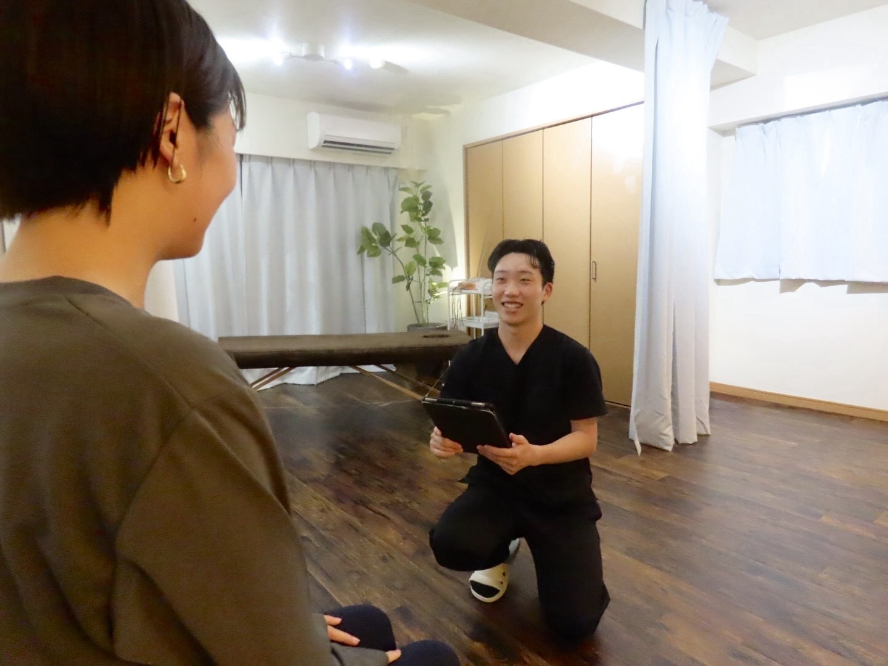
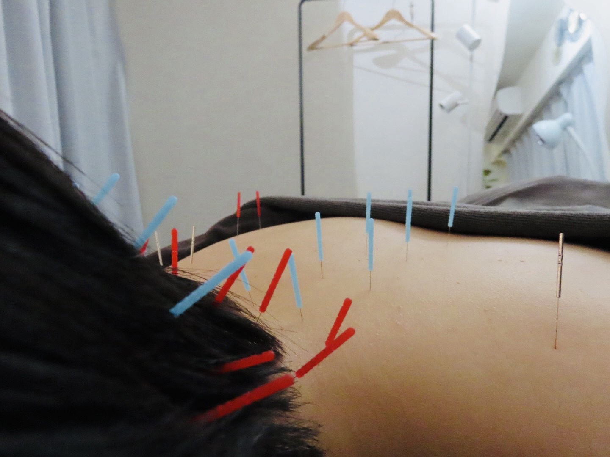
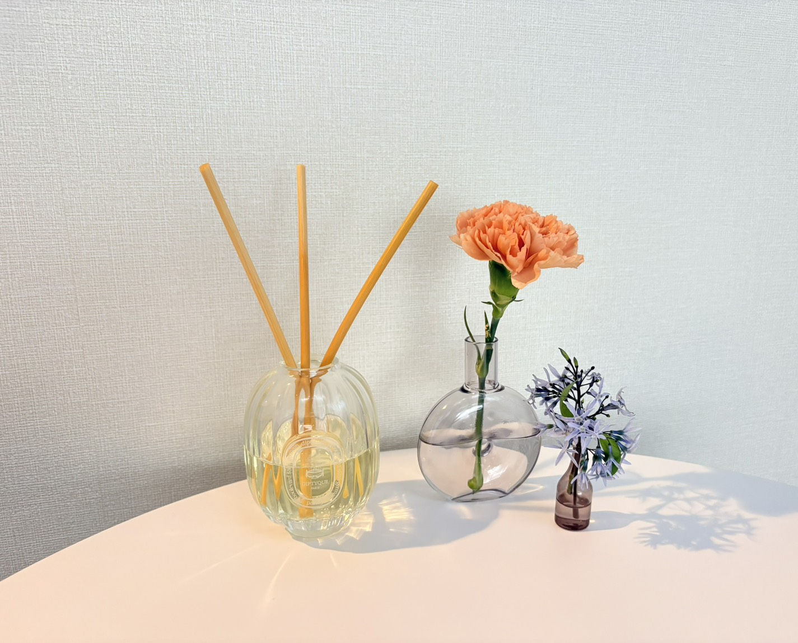

暮らしの中の負担を聞く。
症状だけでなく、生活習慣や姿勢、身体の使い方まで。カウンセリングでお話を伺います。
仕事に集中したい。気兼ねなく出かけたい。
つらい場所だけでなく、
あなたの身体と暮らしに向き合います。

まずは、あなたのお話から。首肩の重さも、腰のつらさも。
その場所だけに、目を向けない。
姿勢や関節の動き、筋肉の緊張。
そして、仕事や日常での身体の使い方。
お悩みに関わる負担を、一緒に確認していきます。
目指すのは、仕事も趣味も楽しめる身体づくり。
「動ける身体は、人生の選択肢を増やす。」
それが中村鍼灸整体院の大切にしている想いです。
症状だけでなく、生活習慣や姿勢、身体の使い方まで。カウンセリングでお話を伺います。
痛む場所に加えて、姿勢や関節の動き、筋肉の緊張を確認。一人ひとりの状態を見ていきます。
整体・鍼灸を身体の状態とご希望に合わせて提案。日常で取り入れるセルフケアもお伝えします。
うまく説明できなくても、大丈夫。
近いお悩みから、当院のアプローチをご覧ください。
 院長 中村 勇斗
院長 中村 勇斗国家資格取得後、大阪で鍼灸師として経験を積み、海外解剖研修で人体の構造を学びました。その後、東京都港区の美容鍼灸整体院で経験を重ね、赤坂に中村鍼灸整体院を開院。
解剖学への理解を土台に、目の前の身体の状態に合わせた整体・鍼灸を提供しています。鍼が苦手な方には、無理に鍼施術を行うことはありません。ご希望や不安もお聞かせください。
初回はカウンセリングを含めて約90分。
ご相談からセルフケアまで、身体と向き合う時間です。
身体の状態や生活習慣、気になることを伺います。

02状態とご希望に合わせ、整体・鍼灸などをご提案します。

03セルフケアの方法や、今後の通院ペースをご案内します。
カウンセリングを含む 約90分
お支払いは各種クレジットカードをご利用いただけます。現金・PayPay・交通系IC・その他QRコード決済には対応していません。
必ず行うわけではありません。身体の状態やご希望に合わせ、整体のみ、または整体と鍼灸を組み合わせた施術をご提案します。
感じ方には個人差があり、痛みや内出血が生じることもあります。不安なことは施術前にご相談ください。使用する鍼は使い捨てです。
お着替えをご用意しています。お仕事帰りやお出かけ前の服装のままご来院いただけます。
気になる症状やご希望をLINEでお知らせください。ご相談のうえ、身体の状態に合わせた施術をご提案します。
そのための一歩を、身体の相談から。
LINEで相談・予約する完全予約制・ご希望の日時をLINEでお知らせください。